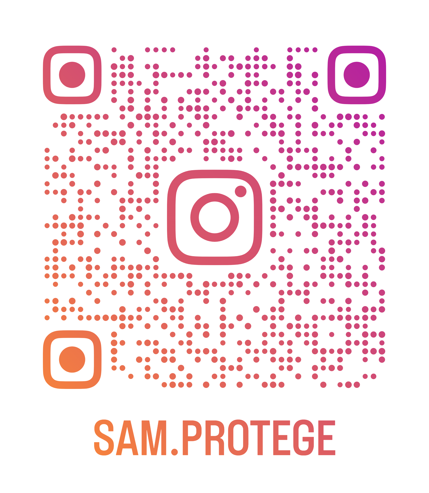

🎉 Gaieté
Parce qu’un esprit joyeux et positif permet d’aborder même les sujets sérieux avec le sourire. Nos produits sont fun, mais pas moins utiles.
Nous sommes cinq jeunes réunis par une idée simple : protéger les autres, même en soirée. Inspirés par l’esprit des secours, des pompiers, et animés par une envie de faire bouger les choses, nous avons créé Sam’Protège.
Notre objectif ? Rendre la sécurité accessible, fun, et dédramatiser les galères qui gâchent souvent les bons moments.
Derrière ce projet, il y a du cœur, des galères, de l’énergie, des nuits blanches et surtout une envie commune d’agir.
Parce que quand Timothée tombe dans les escaliers, ou quand un couple oublie les essentiels…
Il faut quelqu’un. Il faut Sam.
Le Marmou’kit, c’est un concentré de prévention, de sécurité et de bienveillance dans une pochette pratique, colorée, et pensée pour toutes les soirées. Voici ce que vous y trouverez :
Chaque élément a été soigneusement choisi pour répondre aux petits comme aux gros imprévus, dans l’esprit Sam’Protège : jeune, utile, et engagé.
Sam’Protège, c’est bien plus qu’un kit. C’est une mission portée par des jeunes engagés pour changer les habitudes en soirée, avec bienveillance et humour, mais aussi avec sérieux.
Parce qu’un esprit joyeux et positif permet d’aborder même les sujets sérieux avec le sourire. Nos produits sont fun, mais pas moins utiles.
Nous sommes jeunes, et c’est une force. On connaît les galères des soirées entre potes. C’est pour ça qu’on a créé un produit pensé par nous, pour vous.
On ne gâche pas une soirée pour un bobo ou un oubli. On préfère prévenir que courir aux urgences. Et grâce à Sam, chacun peut être le héros de la soirée.
Briser les tabous, vulgariser les gestes qui sauvent, oser parler de protection, c’est notre mission. Le savoir doit être partout, même entre deux verres de soda.
Nous sommes 5 lycéens en classe de seconde, réunis autour d'une mission commune : rendre les soirées plus sûres, plus responsables, et surtout plus simples à gérer en cas de pépin.
Ancien Jeune Sapeur-Pompier, il apporte son expertise des premiers secours et un max de bonne humeur au projet !
Lui aussi Jeunes Sapeurs-Pompiers, il sait ce qu’il faut faire quand la soirée dérape.
Autre pilier du kit, Alex met sa rigueur et son expérience pompier au service de l’efficacité.
Fils de pompier, Maxime connaît les bons réflexes et ne manque jamais une idée pour améliorer le kit.
Lui aussi baigné dans l’univers des secours, Alexandre est un soutien solide pour chaque étape du projet.
Et soyez à votre tour SAM, Sans Accidents Mortels ! cliquez sur les QR codes si dessous

Un problème ?
Contactez-nous via l'adresse mail : sam.protege37000@gmail.com